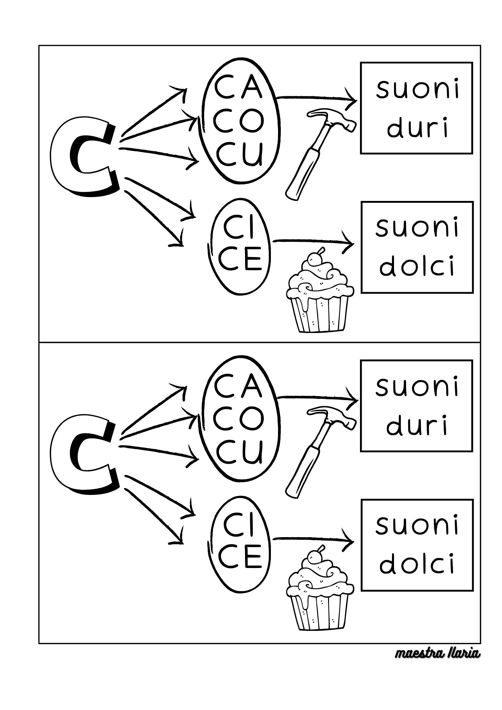
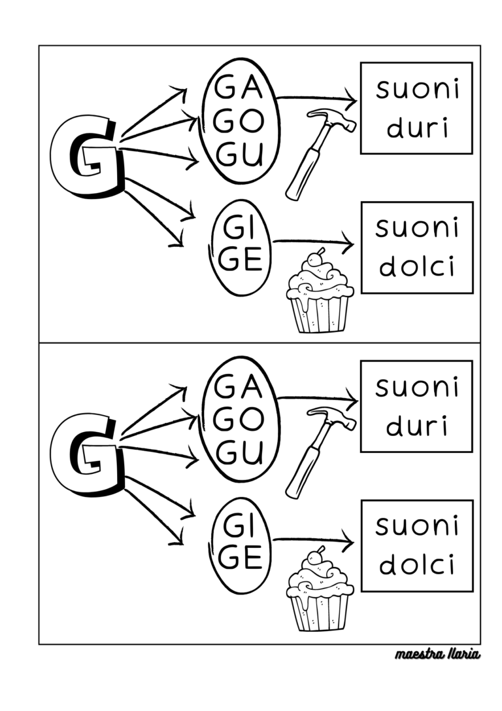
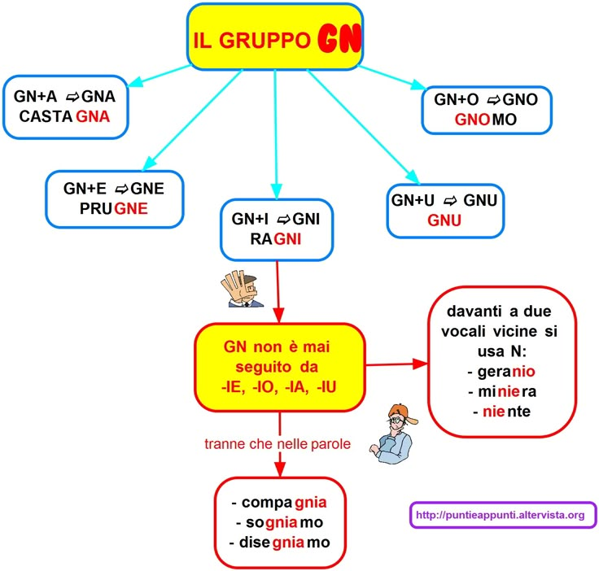
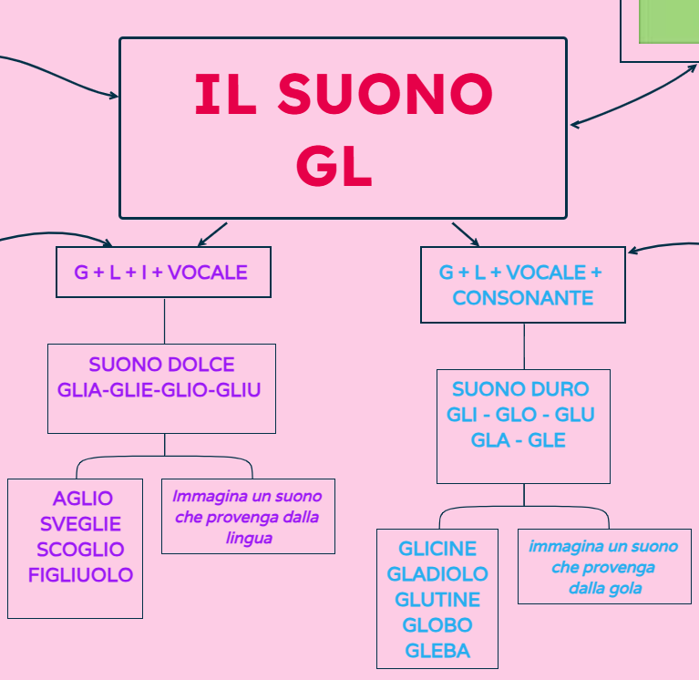
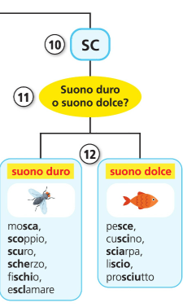
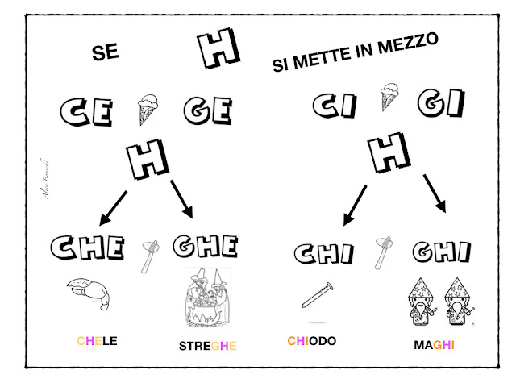

In Italian there are some differences between phonetics and writing
The vowels:
Special cases
The letter "c" can be pronounced both as a "hard c" (k) or as a "soft c" (t͡ʃ)
In English, the two sounds can be found in words such as "skip" and "such"

The letter "g" can be pronounced both as a "hard g" (ɡ) or as a "soft g" (d͡ʒ)
In English, the two sounds can be found in words such as "get" and "giraffe"

The letter combination "gn" is always pronounced as (ɲ)
The ɲ sound can be found in Spanish ("ñ" - niño), French ("gn" - gagner) and Portuguese ("nh" - anho)

The letter combination "gl" can be pronounced both as a "hard gl" (gl) or as a "soft gl" (ʎ)
The ʎ sound can be found in some dialects of French ("ll" - papillon) and in Spanish ("ll" - caballo)

The letter combination "sc" can be pronounced both as a "hard sc" (sk) or as a "soft sc" (ʃ)
The ʃ sound can be found in English ("sh" - push), French ("ch" - chaud) and Russian ("ш" - шапка)

The letter "s" can be both "sonora" (z) or "sorda" (s)
In English, these two sounds can be found in words such as "because" and "six"
The letter "z" can be both "sonora" (d͡z) or "sorda" (t͡s)
These two sounds are not used in English
When we encounter a double consonant in Italian, we momentarely stop on the sound of the first letter
Examples:
In Italian the letter "r" is "rolled" just like in Spanish
Examples:
The letter "h" is completely mute in Italian, and it's used to differentiate two homophones on a writing level
Examples:
The letter "h" is also used in combination with the letters "c" and "g" when followed by either "e" or "i" to differentiate between the hard and the soft sound
